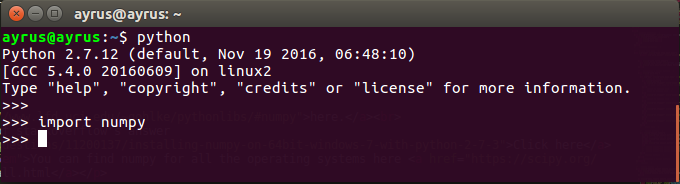
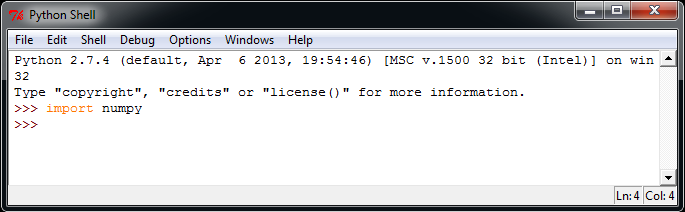

Basics of Numpy for Machine Learning
What is NumPy? 
NumPy is a library for Python programming.This is the fundamental package for scientific computing with Python. It contains among other things
- a powerful N-dimensional array object
- sophisticated (broadcasting)
- tools for integrating C/C++ and Fortran code
- useful linear algebra, Fourier transform, and random number capabilities
Getting Numpy
Using pipType the follwing in terminal
pip install --upgrade pip
pip install numpyWindows packages
Download numpy from here.
Now follow some basic instructions from this answer on StackOverflow Click here
You can find numpy for all the operating systems here https://scipy.org/install.html
Testing Numpy
Open terminal and typepython then
import numpy
and for windows using Python Shell

if you not getting any error then all set...
Let's do NumPy!
Suryaveer
|
18 October, 2017